| ID | X1 | X2 | X3 |
|---|---|---|---|
| 1 | 3.20 | B | 739 |
| 2 | 1.88 | B | NA |
| 3 | NA | NA | 2104 |
| 4 | 2.00 | A | NA |
Multiple imputation of missing data with mice
Department of Methodology and Statistics, Utrecht University
Thom Benjamin Volker
About me
Thom Benjamin Volker
- Utrecht University & Statistics Netherlands
- PhD. Candidate in Methodology and Statistics

Research interests: methods to enhance data privacy, synthetic data and multiple imputation of missing data.
Today
Why missing data is a problem (briefly)
When can, and should, we solve missing data problems
Multiple imputation
Correct inferences with missing data
Materials
Course website: https://thomvolker.github.io/mice4ukraine
GitHub with files: https://github.com/thomvolker/mice4ukraine
Questions?
Feel free to interrupt me, raise hand, etc.
For later, email me t.b.volker@uu.nl
Take-aways
Ignoring missing data is no viable strategy
Missing data means missing information, this adds uncertainty to your inferences
There is (typically) no quick fix, but we can come quite far
Missing data
Values that are not observed, but that are observable in principle
Data analysis is all about missing data
Sampling
Omitted variables
- Non-response
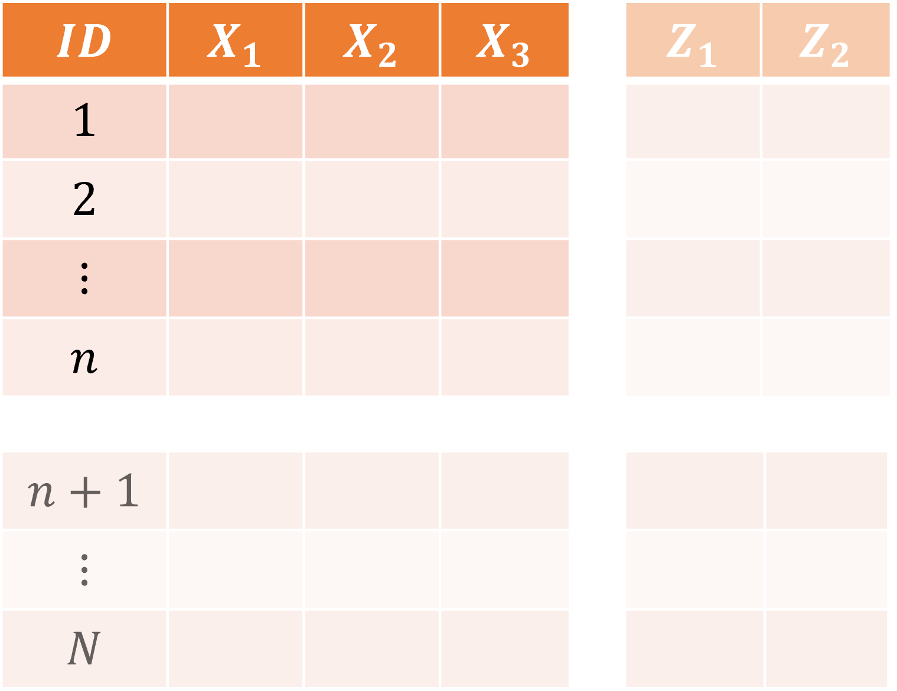
Item non-response
Some, but not all, responses missing for a case
Item non-response
Missing data put us at risk
So when, and how, to deal with them?
Prevention
Obviously, the best way to treat missing data is not to have them (Orchard & Woodbury, 1972)
Design: Short time intervals, few variables, test quality with pilot
Collection: Incentives, match mode to participant, quick follow-up
Measures: Minimize intrusive measures, supportive UX design
Prevention
- DO NOT MAKE QUESTIONS MANDATORY
Even a perfectly designed questionnaire will often have missing data
A taxonomy of missing data mechanisms
MCAR: Missing completely at random
MAR: Missing at random
MNAR or NMAR: Missing not at random
Missing completely at random
Probability of missingness is independent (of observed and unobserved data)
Measurement instrument fails ocassionally
Internet connection fails
People accidentally skip
Missing completely at random
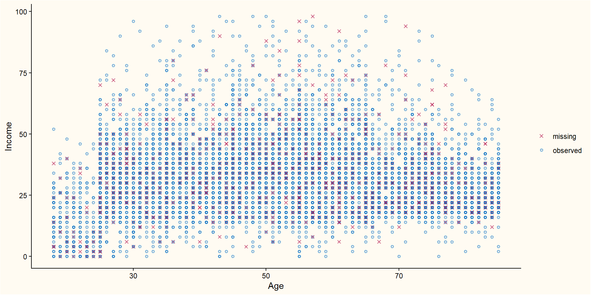Missing at random
Probability to be missing depends on known data (but not unknown data)
People who work in certain branches may be less likely to report their income
Biological measurements may be missing for younger children
Based on certain characteristics of a product a quality control may become more or less likely
Missing at random
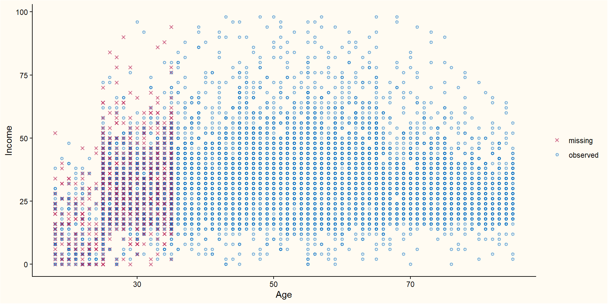Missing not at random
Probability to be missing depends on unknown data (the missing values themselves, or unobserved variables)
People with higher income may be less likely to fill in their income
People with certain political attitudes may be less likely to be open about these
Deliveries from certain locations are less likely to arrive
Missing not at random
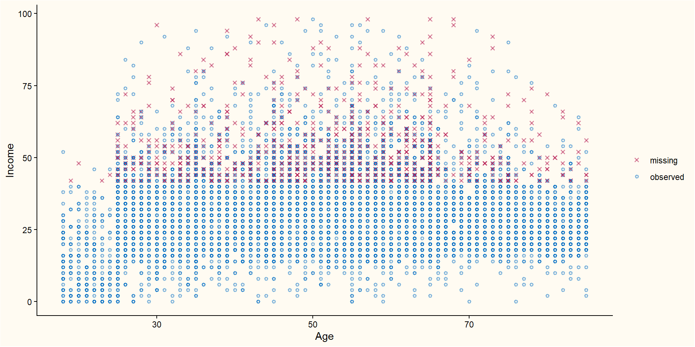When should, and can, we solve the missing data problems?
Planned missingness
Some data should be missing
if (x) continue; else skipSurvival data
Otherwise…
we typically want to solve missing data problems.
When can we?
Missing data mechanisms
Under MCAR and MAR, we can typically solve the missing data problem
Under MNAR, we typically require additional assumptions and more sophisticated models
We cannot tell the missingness mechanism from the data
Working hypothesis: MAR (if unrealistic → sensitivity analysis)
Inspecting the missingness with ggmice
boys data
age: Decimal agehgt: Height (in cm)wgt: Weight (kg)bmi: Body mass indexhc: Head circumference (in cm)gen: Genital Tanner stagephb: Pubic hair (Tanner P1-P6)tv: Testicular volume (ml)reg: Region (north, east, west, south, city)
Missing data pattern
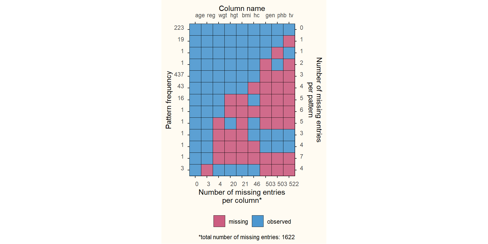Plot correlation matrix
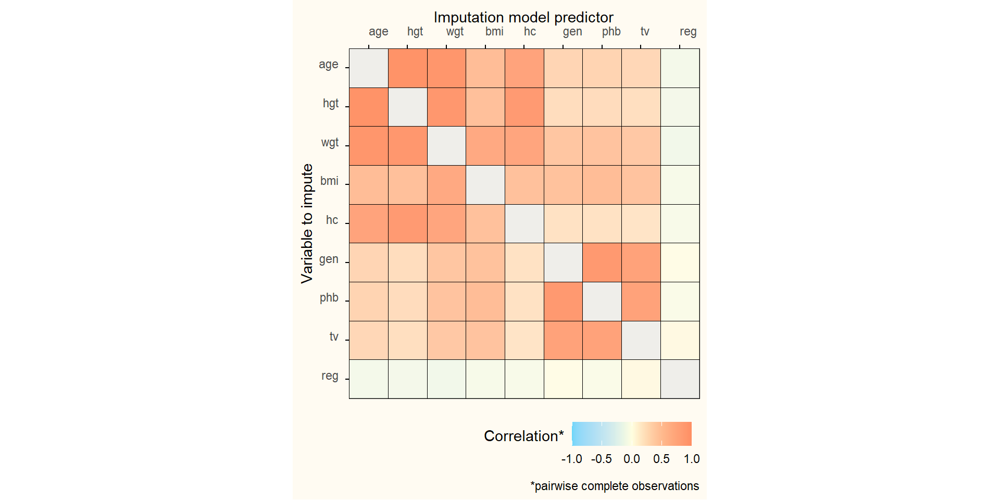Plot relations between variables (1)

Plot relations between variables (2)
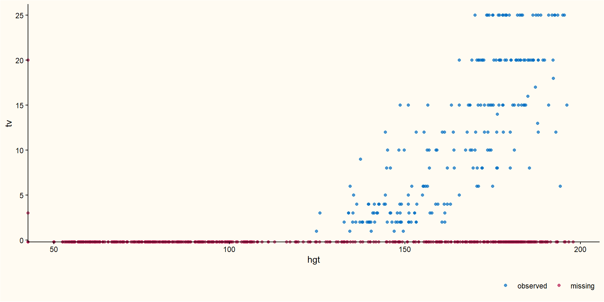Plot relations between variables (3)
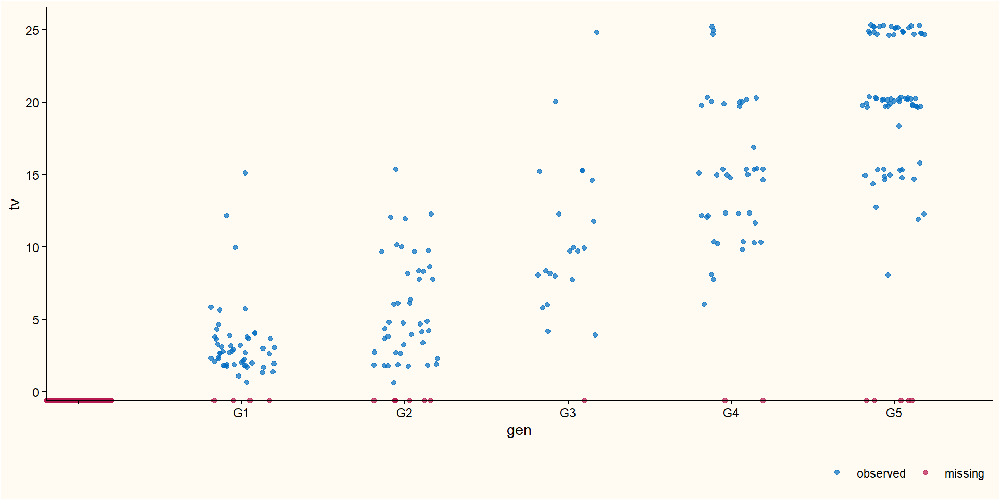Solving missing data problems
Strategy 1
Ignoring missing data: listwise deletion
Loss of information
Often biased if the data is not MCAR
Regression weights can be estimated without bias when:
Missings in \(Y\) only
Missingness does not depend on \(Y\)
Strategy 2
Treating missing data
Ad hoc methods (typically invalid)
Weighting
Likelihood-based methods
- Multiple imputation
Multiple imputation (Rubin 1987)1
What is it and how can you use it?
Multiple imputation
Missing values can be ‘imputed’ (i.e., guessed)
A single imputation can never be correct in general
We can impute each missing value \(m\) times
Each time taking imputation uncertainty into account
Variation between the \(m\) imputed values reflects our uncertainty about the unknown value
Multiple imputation workflow

Assumptions
Missing at random is approximately correct
Imputation model is congenial with analysis model
Congeniality
Imputation model and analysis model are compatible with some larger model.
Examples:
Interactions in the analysis model should be in the imputation model
Transformations in the analysis model should be in the imputation model
Disadvantages
Working with multiple datasets can be cumbersome
Relatively inefficient for small \(m\)
Advantages
Correct point and variance estimates
Splits missing data from the complete-data analysis
Theoretical properties are well established
Flexible, widely applicable
Multiple imputation example
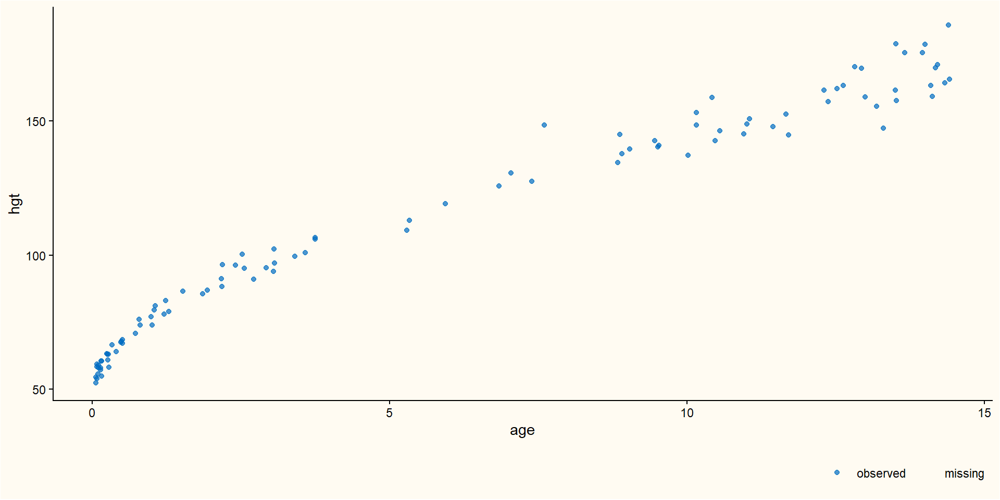One missing case
Conditional mean imputation
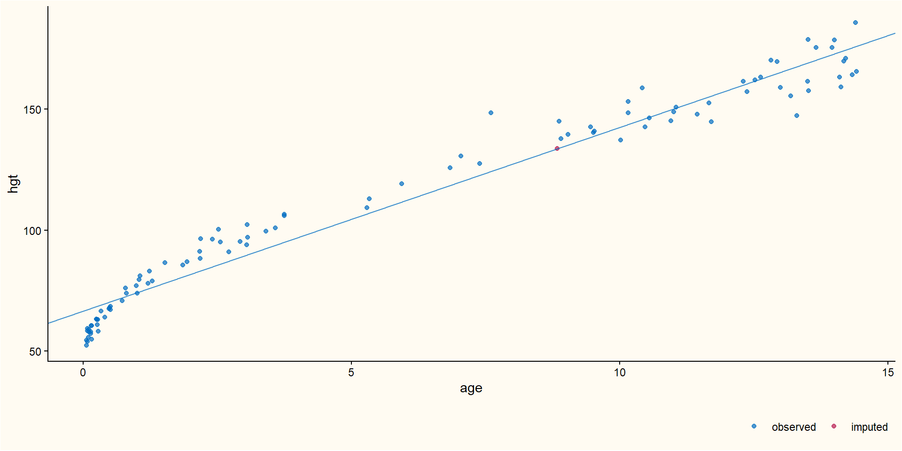Stochastic regression imputation (SRI)
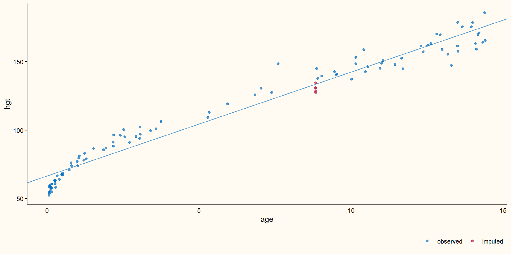SRI with parameter uncertainty
Predictive mean matching (PMM)
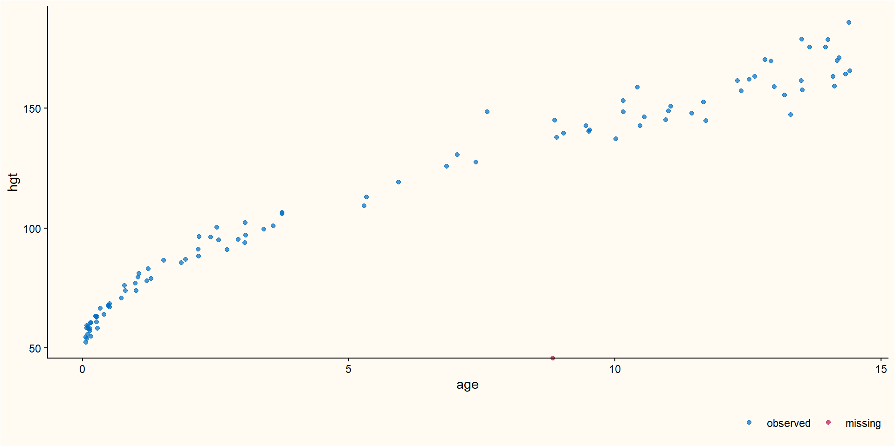PMM: Predict outcome
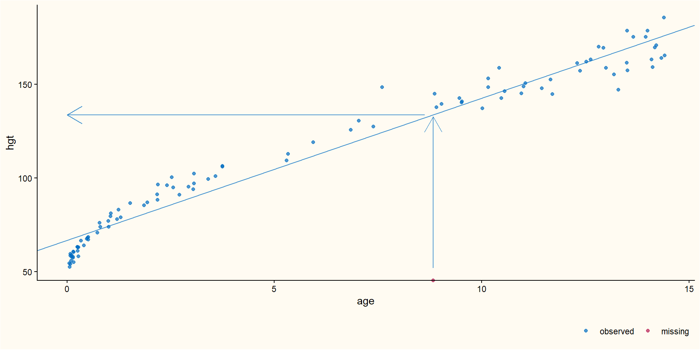PMM: Define matching range
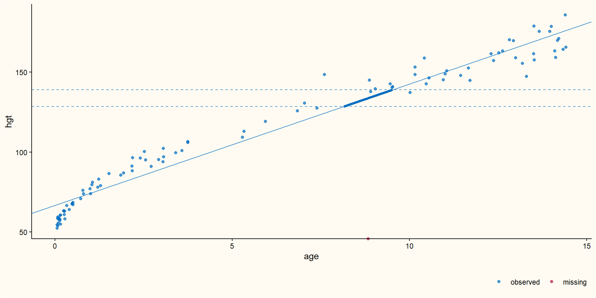PMM: Select potential donors
The mice algorithm
Multiple imputation by chained equations
What does mice(data) do?
Modelling the data
Data are assumed to come from some unknown data-generating mechanism
This mechanism determines:
- Characteristics of each variable
- Mean, variance, etc.
- Relationships between variables
- Correlations, non-linear relationship
- Random noise
- Non-deterministic part - randomness
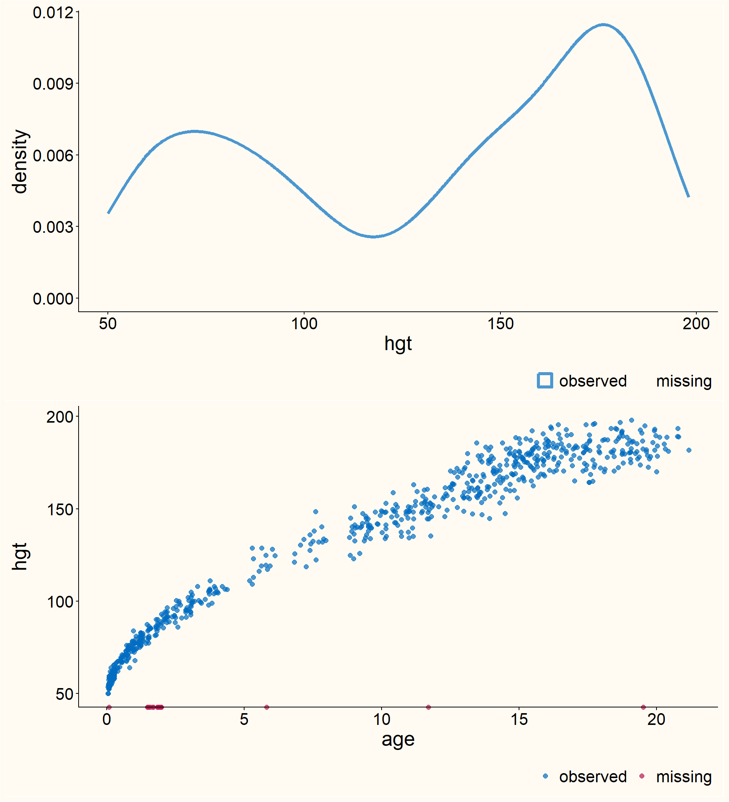
Fully conditional specification
If you have many (\(> 2\)) variables, estimating the distribution of the data is hard!
Idea: break the distribution into a chain of distributions, one per variable
- Model each variable as a function of all other variables.
- For age, height and weight, we model
- \(\text{age} \sim f(\text{height}, \text{weight})\)
- \(\text{height} \sim f(\text{age}, \text{weight})\)
- \(\text{weight} \sim f(\text{age}, \text{height})\)
Instead of modelling the entire data distribution correctly:
→ Simplify: model the distribution of one variable given the others correctly.
Advantages of chained models (1)
Flexibility: We can use essentially any model we want
- Continuous outcome: linear regression, non-linear regression, predictive mean matching, machine learning model
- Count outcome: Poisson regression, predictive mean matching, machine learning model
- Categorical outcome: Logistic regression, predictive mean matching, machine learning model
Advantages of chained models (2)
Incorporating constraints
- Two step procedures:
if (constraint) do [1] else do [2]
Interpretability: Model diagnostics
- We can use standard procedures to check and finetune our imputation models
Let’s try it out
Valid inferences with imputed data
Multiple imputation workflow
Missing data introduces additional uncertainty
We don’t know (with certainty) what the unknown value should be
Pretending to know the unknown value underestimates uncertainty
But we have multiple imputed values!
Analyses with missing data
Usually, the goal is not to impute the data as accurately as possible
Instead, we want to do some interesting analysis
E.g., a \(t\)-test, linear or logistic regression
We have multiple data sets now, how to proceed?
Typical workflow: fit the model of interest to each imputed dataset: estimate parameter of interest and corresponding variance, and adjust for imputation uncertainty.
A \(t\)-test with missing data (visualized)
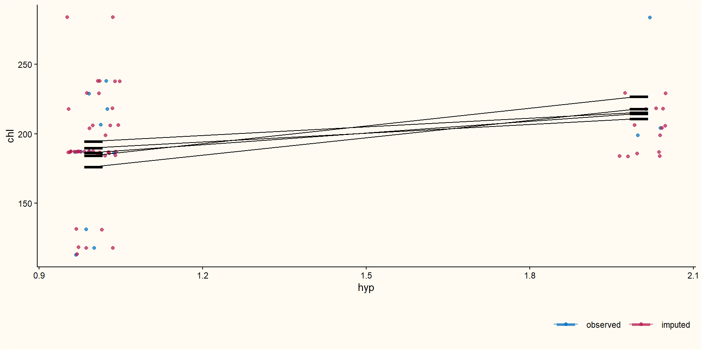Pooling parameter estimates
Define \(Q\), the quantity of interest (a population parameter).
In each imputed data, estimate \(Q\) by \(\hat{Q}_j\)
Average over the imputed data sets: \(\bar Q = \frac 1 m \sum_{j=1}^m \hat{Q}_j\).
The variance of \(\bar Q\): three sources
- Sampling uncertainty (we do not observe the entire population)
- The usual variance that we would also have without missing data: \(\bar U = \frac 1 m \sum_{j=1}^m \hat U_j\)
- Missing data uncertainty (some information is unobserved)
- We can impute, but we are seldom certain of the true underlying value
- Between imputation uncertainty: \(B = \frac{1}{m-1} \sum_{j=1}^m (\hat Q_j - \bar Q)^2\)
- Imputation uncertainty (we approximate the missing values with a finite number of draws from the posterior distribution)
- More draws, the smaller our simulation error: \(\frac B m\)
- Total variance
- Add all components together: \(T = \bar U + B + \frac B m\)
Inferences from \(\bar Q\)
Now we have \(\bar Q\) and its variance, we can make inferences
- Significance testing (or Bayesian tests)
Because the variance around \(\bar Q\) is estimated from the data, inferences are based on a \(t\)-distribution, \(H_0: Q = Q_0\) vs \(H_1: Q \neq Q_0\).
\(p\)-value: \(P\Bigg(\frac{|\bar Q - Q_0|}{\sqrt{T}} > t_{(\nu, 1-\alpha/2)}\Bigg)\)
- \(\nu\): degrees of freedom (given by software)
\(100(1-\alpha)\%\) confidence interval: \(\bar Q \pm t_{(\nu, 1-\alpha/2)}\cdot \sqrt{T}\)
How much information is contained in the missing data?
Proportion of variance attributable to the missing data \[ \lambda = \frac{B + B/m}{T} \]
Relative increase in variance due to non-response \[ r = \frac{B + B/m}{T} \]
Note: \(r = \lambda/(1-\lambda), \lambda = r/(r+1)\)
MI analyses in R
call :
with.mids(data = imp, expr = lm(hc ~ age + hgt + wgt))
call1 :
mice(data = boys, m = 3, printFlag = FALSE)
nmis :
[1] 0 20 4 21 46 503 503 522 3
analyses :
[[1]]
Call:
lm(formula = hc ~ age + hgt + wgt)
Coefficients:
(Intercept) age hgt wgt
31.057901 -0.537040 0.196157 -0.006378
[[2]]
Call:
lm(formula = hc ~ age + hgt + wgt)
Coefficients:
(Intercept) age hgt wgt
30.960941 -0.548777 0.197901 -0.006706
[[3]]
Call:
lm(formula = hc ~ age + hgt + wgt)
Coefficients:
(Intercept) age hgt wgt
31.4675430 -0.5352550 0.1913114 0.0001511 Pooling inferences in R
| term | m | estimate | ubar | b | t | dfcom | df | riv | lambda | fmi |
|---|---|---|---|---|---|---|---|---|---|---|
| (Intercept) | 3 | 31.1621283 | 0.3660572 | 0.0723089 | 0.4624690 | 744 | 42.67498 | 0.2633792 | 0.2084720 | 0.2431312 |
| age | 3 | -0.5403571 | 0.0037181 | 0.0000540 | 0.0037900 | 744 | 643.51010 | 0.0193517 | 0.0189843 | 0.0220191 |
| hgt | 3 | 0.1951233 | 0.0000716 | 0.0000117 | 0.0000871 | 744 | 56.97464 | 0.2171214 | 0.1783892 | 0.2057878 |
| wgt | 3 | -0.0043109 | 0.0001149 | 0.0000150 | 0.0001348 | 744 | 79.85725 | 0.1736036 | 0.1479235 | 0.1684909 |
Pooled summary statistics
More resources